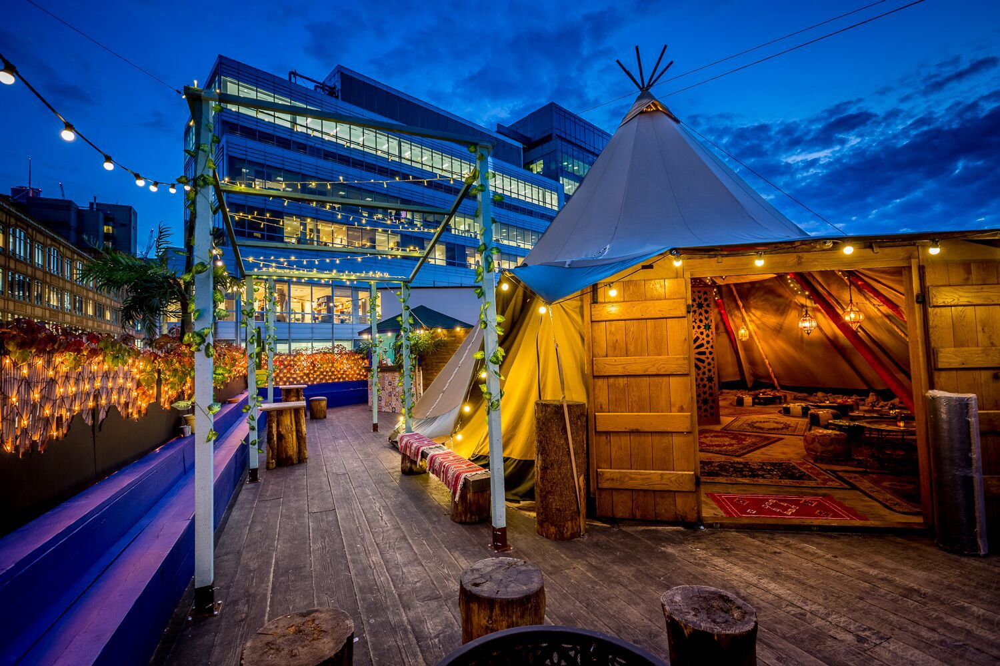

The Best Bars in Hackney
Queen of Hoxton
The Queen of Hoxton – pub, club and everything in between – offers an eclectic mix over two fun floors, with DJs playing
on a cutting-edge disco/house tip on the weekends, while film nights, fringe theatre and food often take centre-stage during the week.
Their huge rooftop is one of the funnest in London too – with an enormous wigwam set up during the winter months.
Behind this Wall
BTW began as a club night at deceased basement venue Plastic People, where it provided a safe haven for record enthusiasts.
Vinyl was king, and so it is here, with one single plate taking pride of place next to the bar and a Tannoy Gold soundsystem
creating the kind of atmosphere musos crave. Pair inventive cocktails with bowls of nourishing Asian food.

Original Sin
A Stokey sister to Hoxton’s Happiness Forgets (see above), this long, thin bar stretches the length of the long, thin room,
which has booth tables at one end and a pool table at the other. Service is never not friendly and the drinks are all delicious,
original cocktail concoctions that use many a spirit you may never have heard of.
Ridley Road Market Bar
If the thought of a tacky tiki bar makes you run for cover, know that Ridley Road Market Bar is cool AF, a Dalston hangout
that looks like a beach shack and that attracts a crowd of cool young things who form a queue out the door on weekends.
Join them under the disco ball with a ginger mojito in hand.
Ruby
There are two sides to this east London institution, and both offer a brilliant night out. Start off in the original cocktail
bar to the left at the bottom of the stairs, where lampshades rest off kilter and drinks will make you feel just as squiffy.
Then move into the newer ‘lounge’, a place where disco and hip hop DJs set the mood and Dalston’s finest come out to play.
Pub on the Park
This buzzing boozer close to London Fields station really draws the crowds in summer. Most of that's down to a spacious outdoor
terrace, with the green of London Fields itself within pint-tossing distance.
DJs keep it busy when night falls. There's a solid selection of ales on pull pump, with regularly changing drops from brewers.
Jugs of Pimm's do brisk business in the summer.
People's Park Tavern
During the day, this sprawling boozer is a reflection of the area's park life. You'll find plenty of dog walkers, settling in for a warming-up
by the fire or for an afternoon of sport on big screens. By night it makes its own fun with quizzes, discos and comedy nights.
But the main draw is the beer garden, with pretty bunting and a constant summertime crowd enjoying pub grub and pints.
The burgers are the pick of the menu.
NT's
The newest addition to Netil House, this café-by-day/cocktail-bar-by-night has a similar vibe to its seasonal
counterpart: good food, DJs and innovative cocktails. The space channels warehouse chic, softened with
leather chairs, communal tables and potted plants, all bathed in a pink neon hue that renders Instagram filters
redundant.

Dalston Roof Park
The venue offers the shelter of a covered bar and a roofed area in front of the decks, so you can dance whatever the weather.
Colour comes from bright beanbags, allowing relaxed drinkers to carpet the floor as heavily as that AstroTurf.
Throughout the season, pop-up food traders will be setting up shop for monthly residencies, sunrise yoga
sessions will crop up on the regs and those DJs keep coming, so get on up.